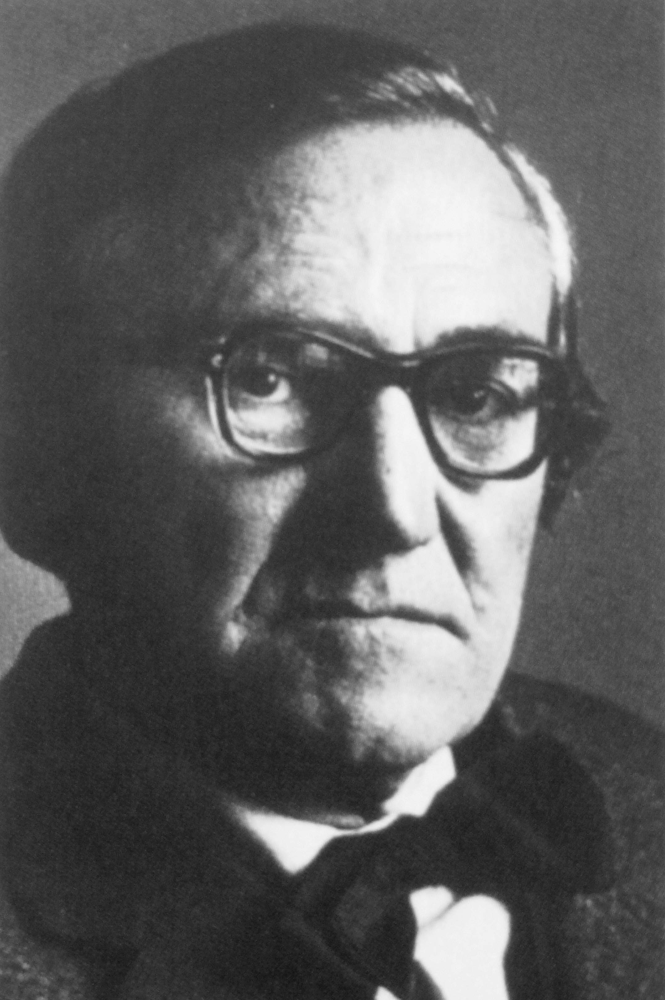
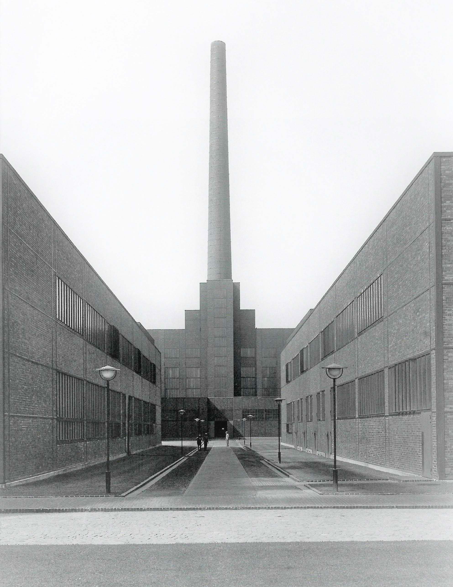

×
Fritz Schupp und Martin Kremmer
Fritz Schupp wurde am 22. Dezember 1896 in Krefeld als Sohn eines leitenden Angestellten der dort ansässigen chemischen Industrie geboren. An seine Schulausbildung an einem
humanistischen Gymnasium in Essen schloss sich ab 1914 ein Architekturstudium zunächst an der Technischen Hochschule in Karlsruhe an. Bereits hier lernte er den aus Berlin
stammenden Martin Kremmer kennen.
Martin Kremmer wurde 1894 im polnischen Posen/Poznan als Sohn eines Oberstudiendirektors geboren. Zunächst in Polen zur Schule gegangen, machte Martin Kremmer nach dem Umzug
in Berlin sein Abitur und begann 1915 ein Architekturstudium in Karlsruhe. Im Gegensatz zu Fritz Schupp, der wehruntauglich war, leistete Kremmer seinen Militärdienst im
Ersten Weltkrieg ab.

Fritz Schupp (1896 – 1974)
Bild: Kristina Pegels-Hellweg, Bauten für die Industrie, Bochum 2012, S. 434
Martin Kremmer (1894 – 1945)
Bild: Kristina Pegels-Hellweg, Bauten für die Industrie, Bochum 2012, S. 434
Martin Kremmer stirbt in den letzten Kriegstagen des Zweiten Weltkrieges im Bombenhagel auf Berlin. Fritz Schupp arbeitete nach 1945 als Architekt weiter und wurde 1951
Professor an der Technischen Hochschule Hannover. Neben dem Kulturpreis der Stadt Goslar bekommt Schupp 1965 das Große Bundesverdienstkreuz.
Fritz Schupp und Martin Kremmer gehören zu den bedeutendsten deutschen Industriearchitekten des 20. Jahrhunderts. Die Bürogemeinschaft Schupp / Kremmer hat den Industriebau,
vor allem im Bergbau, maßgeblich beeinflusst und war bei nahezu jeder größeren Werksanlage im Ruhrgebiet in Planung und Ausführung involviert. Ihre Gestaltung im Sinne der
klassischen Moderne wurde häufig adaptiert und war Vorbild für zahlreiche weitere Industrieanlagen. Gleich zwei ihrer Industriebauten, der Gesamtkomplex Zeche Zollverein
Schacht 12 in Essen (1927 – 1932) und das Erzbergwerk Rammelsberg (1936 – 1939) in Goslar / Harz, gehören zu den deutschen Industriedenkmalen, denen von der UNESCO der
Rang eines Weltkulturerbes zuerkannt wurde.

Anton Meinholz, Werkstattgebäude und Kesselhaus mit Schornstein der Zeche Zollverein, Essen 1934.
Bild: Stiftung Zollverein (Hg.) Der Blick der Sachlichkeit. Zeche Zollverein im Spiegel der Fotografie, Essen 2016, S. 39.
Während Zollverein als Musterbeispiel funktionalistischer Architektur der 1920er Jahre nach Vorbild des Bauhauses gilt, wurde das Erzbergwerk Rammelsberg im
Nationalsozialismus von den Architekten in einer traditionsgebundenen, an der regionalen Bauweise orientierten Architektursprache ausgeführt. In den Entwürfen der
beiden Architekten in der Zeit des Nationalsozialismus verschneiden sie historische und aktuelle politische Bezüge mit Elementen der klassischen Moderne. Doch
nicht nur durch ihre Entwürfe machten sich die Architekten zum Teil des NS-Systems, sondern der Industriebau erfüllte eine wichtige Voraussetzung zur
Funktionsfähigkeit des nationalsozialistischen Regimes: Seine Bauten dienten in hohem Maße der Kriegsvorbereitung und -durchführung, nicht zuletzt mittels Ausbeutung
von Zwangsarbeitern und KZ-Häftlingen.
Eine Auseinandersetzung um Verantwortung, möglicherweise um eine schuldhafte Verstrickung in Vorhaben des Nationalsozialismus führte Fritz Schupp als Überlebender
der Architektengemeinschaft nach 1945 nicht.